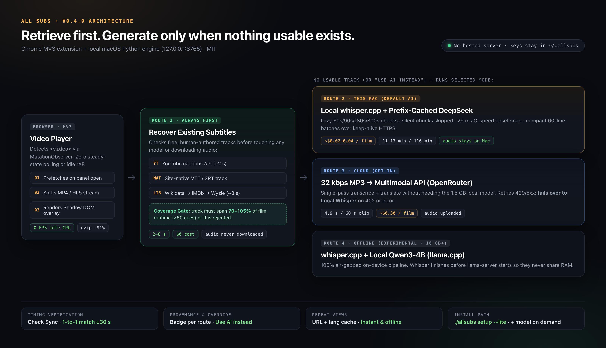
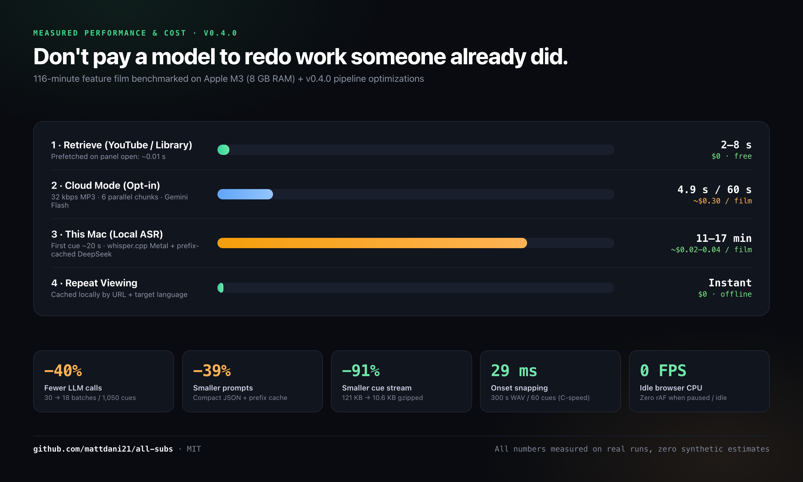
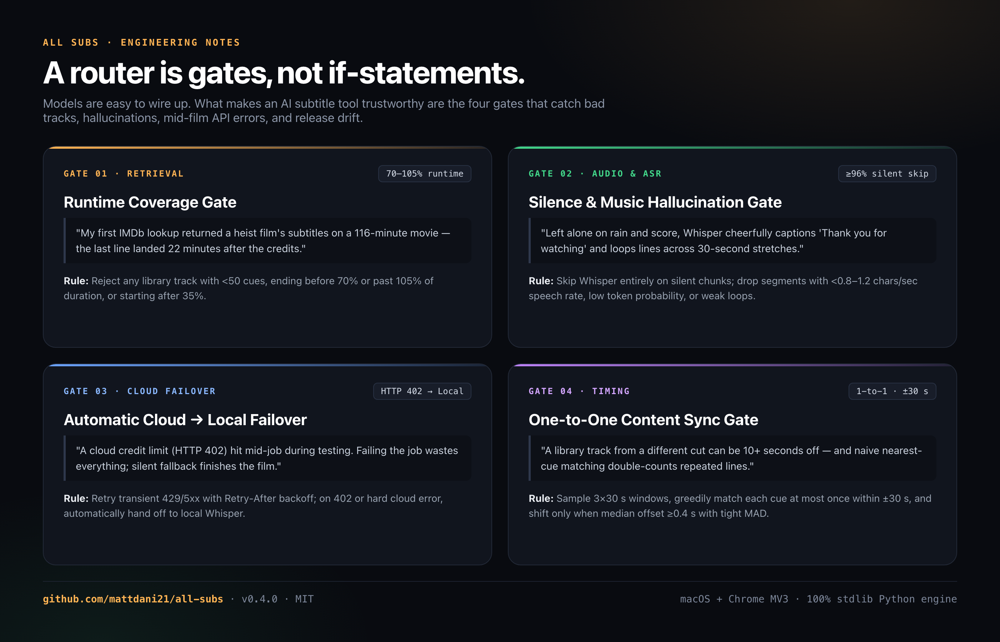

Chrome MV3 extension + local macOS engine · MIT
Captions for the video nobody subtitled.
All Subs checks existing subtitles first — YouTube tracks, site-native tracks, and public subtitle libraries gated on runtime coverage — and only falls back to local Whisper + prefix-cached LLM translation when nothing usable exists.
git clone https://github.com/mattdani21/all-subs.git
cd all-subs && ./allsubs setup && ./allsubs start
Want retrieval or Cloud mode without the 1.5 GB speech model? Run ./allsubs setup --lite
and pull Whisper later with ./allsubs model.
2–8 s
Existing track recovery
~0.01 s once panel prefetches
~$0.02–0.04
Full feature translation
−40% calls via prefix caching
0 FPS
Idle browser overhead
Zero rAF when paused or idle
−91%
Gzipped cue stream
121 KB → 10.6 KB per film

Architecture
Retrieve first. Generate only when nothing usable exists.

Measured routes
Four paths with different latency, cost, and privacy curves
| Route | When it runs | Measured (116-min film, M3 / 8 GB) |
|---|---|---|
| 1 · Retrieve | Always tried first (unless you click Use AI instead): YouTube captions, site tracks, or Wikidata → IMDb → Wyzie library gated on 70–105% runtime coverage. | 2–8 s · $0 |
| 2 · This Mac | Default AI mode: whisper.cpp on Apple Silicon; silent chunks skipped; prefix-cached compact cue batches sent to DeepSeek over keep-alive HTTPS. |
11–17 min · ~$0.02–0.04 |
| 3 · Cloud | Opt-in mode: 32 kbps mono MP3 chunks sent to OpenRouter / Gemini Flash without needing the 1.5 GB local model. Fails over to local Whisper on 402/error. | 4.9 s / 60 s · ~$0.30/film |
| 4 · Offline | Experimental opt-in (16 GB+ RAM): whisper.cpp plus local Qwen3-4B via llama.cpp. Nothing leaves the machine. |
100% local · 16 GB+ |

Engineering notes
A router is gates, not if-statements.

Privacy
What leaves your machine — by route
There is no hosted All Subs server, no account, and no analytics. API keys are stored locally
in ~/.allsubs/config.json with 0600 permissions.
| Route | Sent off-device | Stays on your Mac |
|---|---|---|
| YouTube / native | Nothing (cue text to DeepSeek only if translating to another language) | Audio & video |
| Library (Wyzie) | Cleaned title + year to Wikidata; IMDb ID + target language to Wyzie | Audio & video |
| This Mac (AI) | Cue text only to DeepSeek (api.deepseek.com) |
Audio, video & Whisper model |
| Cloud (opt-in) | 32 kbps mono audio chunks to OpenRouter (openrouter.ai) |
Video |
| Offline (exp.) | Nothing | Everything |
Scope & limits
Honest boundaries
Tested & working
- bilibili.tv — library retrieval + full 116-min local AI pipeline verified.
- YouTube — native & auto captions in ~2 s (no audio download).
- Direct MP4 / HLS players — stream sniffer works in top and iframe players.
- Local files — playable through
test/player.html.
Out of scope
- Not DRM: Netflix, Prime Video, and Disney+ are encrypted and unsupported.
- Not real-time: processed once per video, then served instantly from local cache.
- macOS-first: Apple Silicon Metal for
whisper.cpp; Linux untested, no Windows installer yet. - Alpha: unsigned local engine, unpacked Chrome extension.